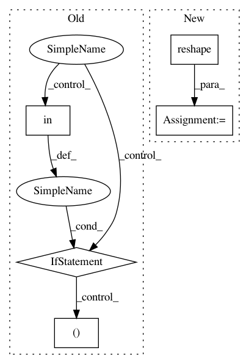

a1260cc19342c4db61c6942a11c2b2b2b58f8bad,python/tvm/relay/frontend/keras.py,,_convert_reshape,#Any#Any#Any#,863
Before Change
if len(inshape) == 3 and len(tshape) == 1:
// (?, a, b) -> (-1, ab)
shape = (-1, tshape[0])
elif len(inshape) in [2, 3] and len(tshape) == 2:
// (?, cc) -> (-1, c, c)
// (?, a, b) -> (-1, c, c)
assert tshape[0] == tshape[1], "Only supports square target shapes, but got {}".format(
tshape
)
shape = (-1,) + tshape
else:
// (?, h, w, c) -> (-1, c, H, W)
// (?, h, w, c) -> (-1, c, hw)
// (?, hw, c) -> (-1, c, h, w)
ch = inshape[-1]
assert ch == tshape[-1], (
"Only supports last dimension in target shape being equal to "
"the channel number of input tensor."
)
if etab.data_layout == "NCHW":
shape = (-1, ch) + tshape[:-1]
else:
shape = (-1,) + tshape[:-1] + (ch,)
return _op.reshape(inexpr, newshape=shape)
After Change
if etab.data_layout == "NCHW" and (len(inshape) > 3 or len(tshape) > 2):
// Perform reshape in original NHWC format.
inexpr = _op.transpose(inexpr, [0] + list(range(2, len(inshape))) + [1])
inexpr = _op.reshape(inexpr, newshape=shape)
return _op.transpose(inexpr, axes=[0, -1] + list(range(1, len(shape) - 1)))
return _op.reshape(inexpr, newshape=shape)
In pattern: SUPERPATTERN
Frequency: 3
Non-data size: 5
Instances
Project Name: apache/incubator-tvm
Commit Name: a1260cc19342c4db61c6942a11c2b2b2b58f8bad
Time: 2021-02-12
Author: trevmorr@amazon.com
File Name: python/tvm/relay/frontend/keras.py
Class Name:
Method Name: _convert_reshape
Project Name: chainer/chainercv
Commit Name: 827e12f3b9506e0f78cc79445441cd9d1f25c055
Time: 2018-04-24
Author: Hakuyume@users.noreply.github.com
File Name: chainercv/links/model/yolo/yolov3.py
Class Name: YOLOv3
Method Name: __call__
Project Name: logpai/loglizer
Commit Name: 7c960272c5ab4d25a022538f5849addec3e6bfee
Time: 2019-02-25
Author: zhujm.home@gmail.com
File Name: loglizer/preprocessing.py
Class Name: FeatureExtractor
Method Name: transform